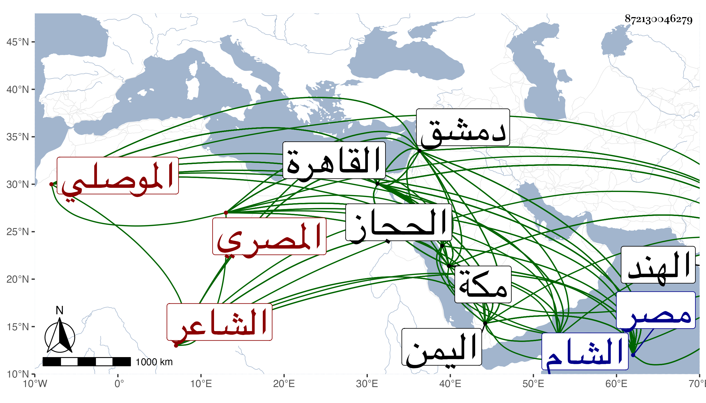

0902Sakhawi.DawLamic.ITO20230111-ara1.EIS1600.872130046279
Biography ID: 872130046279
1162
شعبان بن محمد بن داود زين الدين الموصلي الأصل المصري الشاعر ويعرف بالآثاري ومحمد في نسبه مختلف فيه وأشار لذلك شيخنا في إنبائه فإنه قال ثم زعم أن اسم أبيه محمد بن داود ويقال إن داود ممن تشرف بالاسلام فأحب أن يبعد عنه ثم صار يكتب الآثاري نسبة إلى الآثار النبوية لكونه أقام بمكانها مدة ، ولد في ليلة النصف من شعبان سنة خمس وستين وسبعمائة بمصر واشتغل في مبدأ أمره بالكتابة عند أبي علي الزفتاوي حتى تمهر في المنسوب وصار رأس من كتب عليه وأجازه فصار يكتب الناس ثم اتفق أنه شرب البلادر وهو كبير فحصل له نشاف وأقام مدة عاريا من الثياب بل كان في الشتاء مكشوف الرأس ثم أفاق منه قليلا ولزم الاشتغال عند الغماري والبدر الطنبذي وغيرهما وحفظ عدة مختصرات في أيام يسيرة ثم تعانى النظم فنظم نظما سافلا ثم لا زال يستكثر منه حتى انصقل قليلا ونظم نظما متوسطا وأقبل على ثلب الاعراض وتمزيقها بالهجو المقذع وتعلق على توقيع الحكم فقرر به ثم عمل نقيب الحكم بمصر ثم استقر في حسبتها بمال وعد به في ثاني عشر شعبان سنة تسع وتسعين عوضا عن نور الدين علي بن عبد الوارث البكري بعد أن كان يوقع بين يديه فلم ينهض بما وعد به فعزل في شعبان من التي تليها بالشمس الشاذلي ثم أعيد ثم عزل به ، ونودي عليه فادعى عليه جماعة بقوادح فأهين إهانة بالغة ففر إلى الحجاز في سنة سبع وثمانمائة ثم دخل اليمن ومدح ملكها فأعجبه وأثابه وكذا مدح أعيانها وتقرب منهم ثم انقلب يهجوهم كعادته ، وأثار بها شرا اقتضى نفيه إلى الهند بأمر الناصر بن الأشرف فأقام به سنين وأكرم ثم عاد إلى طبعه فأخرج بعد أن استفاد مالا أصيب بعضه وعاد إلى اليمن فلم يتغير عما عهد منه فأخرج منها بعد يسير فتوجه إلى مكة فجاور بها وقطنها نحو عشر سنين أيضا وجرت له أمور غير طائلة ونصب نفسه غرضا للذم وتزوج جارية من جواري الأشراف يقال لها خود اتخذها ذريعة لما يريده من الذم والمجون وغير ذلك فصار ينسب نفسه إلى القيادة والرضى بذلك لعشقه فيها إلى غير ذلك ، وهو في كل هذا يتغالى في الهجاء ويتطور ويتمضغ بالأعراض ، ثم دخل الشام في سنة عشرين ثم القاهرة في التي تليها بعد غيبته عنها دهرا فأكرمه جماعة من الأعيان كالزيني عبد الباسط وكذا وقف كتبه وتصانيفه بمدرسته ومدح كاتب السر وغيره ثم رجع إلى دمشق فاستوطنها وتكرر دخوله منها إلى القاهرة مرة بعد أخرى فكانت منيته ثاني يوم قدومه وذلك سابع عشر جمادى الآخرة سنة ثمان وعشرين . ذكره شيخنا في معجمه وقال انه أجاز لابنه محمد وكتب بخطه أن تصانيفه الأدبية تزيد على الثلاثين غالبها منظومات ومنها مما حدث به في مكة منظومته في العربية وغيرها ورأيت له قصيدة نونية هنأ شيخنا فيها برمضان كتب بخطه في طرتها : تهنئة شعبان برمضان ، أوردتها في الجواهر ، وقال في إنبائه انه مدحه بقصيدة تائية وكأنها المشار إليها في معجمه بقوله ومدحني بقصيدة طويلة ، قال وسمعت من نظمه أشياء علقتها في التذكرة ووصف هو شيخنا بقوله سيدنا وشيخنا وبركتنا . ومن نظمه :
| ربي لك الحمد كما جدت لي | بنعمة دائمة وافيه |
| قد كان ارى نائما وحده | فصار في خير وفي عافيه |
وكتب بخطه أنه اشترى عبدا فسماه خير وجارية فسماها عافية وكتب تحت البيتين الأسرار عند الأحرار . قال شيخنا بعد ذكر أكثر ما تقدم في الانباء وكان فيه تناقض فإنه يتماجن إلى أن يصير أضحوكة ويتعاظم إلى أن يظن أنه في غاية التصون مع شدة الاعجاب بنظمه لا يظن أن أحدا يقدر على نظيره مع أنه ليس بالفائق بل ولا جميعه من المتوسط بل أكثره سفساف كثير الحشو عرى عن البديع ولما قدم القاهرة سنة عشرين هجا البهاء بن البرجي الذي كان يتولى الحسبة قديما وكأنه أشار إلى قوله عند ميل منار المويدية لكونه كان ناظر العمارة :
| عتبنا على ميل المنار زويلة | وقلنا تركت الناس بالميل في هرج |
| فقالت قريني برج نحس أمالني | فلا بارك الرحمن في ذلك البرج |
قال ثم صادف أن ولي الهروي القضاء فهجاه ومدح الجلال البلقيني وكأنه بما شاء ذكره فأثابه ولعله أيضا هجا البلقيني ثم توجه إلى دمشق فقطنها إلى أن قدم القاهرة سنة سبع وعشرين ، ومدحني بقصيدة تائية مطولة ولا أشك أنه هجاني كغيري ، وقال وخلف تركة جيدة قيل بلغت ما قيمته خمسة آلاف دينار مع أنه كان مقترا على نفسه فاستولى عليها شخص ادعى أنه أخوه وأعانه على ذلك بعض أهل الدولة وتقاسما المال . ومن نظمه وقد ركب معه بعض الرؤساء البحر :
| ولما رأينا السفن تحمل عالما | عطاياه للعافين ليس لها حصر |
| عجبت لها إذ تحمل البحر والذي | عهدناه أن السفن يحملها البحر |
ومنه قوله لما أعيد الجلال البلقيني عقب عزل الهروي وزينت القاهرة لذلك وللمؤيد وعلق الترجمان في الزينة حمارا حيا :
| أقام الترجمان لسان حال | عن الدنيا يقول لنا جهارا |
| زمان فيه قد وضعوا جلالا | عن العليا وقد رفعوا حمارا |
ورأيت من أرخ مولده سنة تسع وخمسين وسمى ألفيته في النحو كفاية الغلام في إعراب الكلام قرظها له البلقيني وعمل أرجوزة في النحو أيضا سماها الحلاوة السكرية وأخرى سماها عنان العربية وأخرى في العروض سماها الوجه الجميل في علم الخليل وأخرى في علم الكتابة ولسان العرب في علوم الأدب وديوان في النبويات سماه المنهل العذب وكتابا سماه الرد على من تجاوز الحد وشرح الألفية في ثلاث مجلدات ولكنه لم يكمل . قال ابن قاضي شهبة : وكان ممن يتقي لسانه ويخاف شره وهو عند ابن فهد في ذيله لتاريخ مكة ، وقال المقريزي في عقوده انه لم يكن مرضي الطريقة ولا رضي الاخلاق يرميه معارفه بقبائح عفا الله عنه وإيانا .
